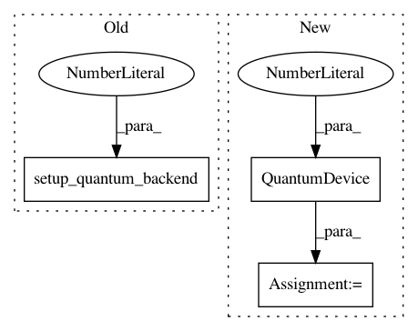

e3c758a76b6f2ff8d9dc49582c306fc8cf2b26d1,test/test_qsvm_variational.py,TestQSVMVariational,test_qsvm_variational_directly,#TestQSVMVariational#,64
Before Change
svm = QSVMVariational(optimizer, feature_map, var_form, self.training_data, self.testing_data)
svm.random_seed = self.random_seed
svm.setup_quantum_backend(backend=backend, shots=1024)
result = svm.run()
np.testing.assert_array_almost_equal(result["opt_params"], self.ref_opt_params, decimal=4)
np.testing.assert_array_almost_equal(result["training_loss"], self.ref_train_loss, decimal=8)
After Change
svm = QSVMVariational(optimizer, feature_map, var_form, self.training_data, self.testing_data)
svm.random_seed = self.random_seed
quantum_device = QuantumDevice(backend, shots=1024)
result = svm.run(quantum_device)
np.testing.assert_array_almost_equal(result["opt_params"], self.ref_opt_params, decimal=4)
np.testing.assert_array_almost_equal(result["training_loss"], self.ref_train_loss, decimal=8)
In pattern: SUPERPATTERN
Frequency: 3
Non-data size: 3
Instances
Project Name: Qiskit/qiskit-aqua
Commit Name: e3c758a76b6f2ff8d9dc49582c306fc8cf2b26d1
Time: 2018-12-04
Author: chenrich@us.ibm.com
File Name: test/test_qsvm_variational.py
Class Name: TestQSVMVariational
Method Name: test_qsvm_variational_directly
Project Name: Qiskit/qiskit-aqua
Commit Name: e3c758a76b6f2ff8d9dc49582c306fc8cf2b26d1
Time: 2018-12-04
Author: chenrich@us.ibm.com
File Name: test/test_qaoa.py
Class Name: TestQAOA
Method Name: test_qaoa
Project Name: Qiskit/qiskit-aqua
Commit Name: e3c758a76b6f2ff8d9dc49582c306fc8cf2b26d1
Time: 2018-12-04
Author: chenrich@us.ibm.com
File Name: test/test_grover.py
Class Name: TestGrover
Method Name: test_grover